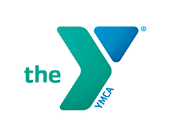
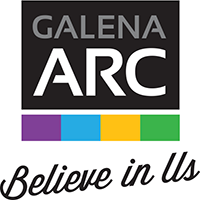
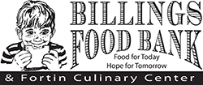
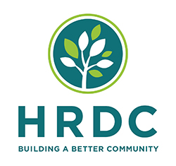
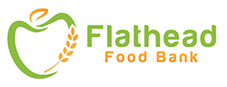
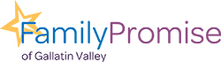
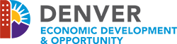
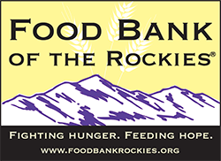
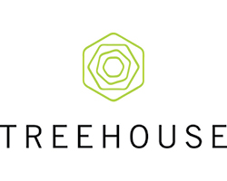

DB&T and Heartland Financial, USA, Inc. Contribute $200,000 locally to Disaster Recovery Fund for COVID-19 Relief
DUBUQUE, Iowa (April 15, 2020) – Dubuque Bank and Trust and Heartland Financial USA, Inc. (NASDAQ: HTLF) announced today they will commit $200,000 to the Greater Dubuque Disaster Recovery Fund for COVID-19 relief efforts. As a local community bank and Dubuque-based holding company, DB&T and Heartland will provide a $1 to $1 challenge match to the Disaster Recovery Fund up to $200,000 at the Community Foundation of Greater Dubuque to pledge their support and encourage Dubuque-area residents to continue contributing to this worthy cause.
Heartland and its 11 member banks, including DB&T, announced contributions totaling $1.2 million to support nonprofit organizations in our communities that are leading the response to COVID-19.
“This is an unprecedented time for businesses and families in the Greater Dubuque area,” expressed Tut Fuller, President and CEO of Dubuque Bank and Trust. “Our employees, clients, and community continue to come together to help one another during this crisis and we want to continue to help.”
Bruce Lee, President and CEO of Heartland added, “We are fortunate to live and work in Dubuque. On behalf of our amazing team at Dubuque Bank and Trust and Heartland, I am proud to support this important relief effort and invite our community to participate.”
With over $300,000 in funds already granted to local non-profits as of April 13 by the Community Foundation of Greater Dubuque, this substantial donation from DB&T/Heartland combined with matching dollars will allow additional resources to meet evolving needs related to COVID-19 in our community.
“This substantial gift from Dubuque Bank and Trust and Heartland Financial, USA Inc. will have a significant impact on our community,” said Nancy Van Milligen, President and CEO of the Community Foundation of Greater Dubuque. “We are granting funds to organizations responding on the front lines of this crisis, and this gift will enable ongoing assistance for vulnerable groups during this time of uncertainty.”
Beginning today, April 15, all donations to the Greater Dubuque Disaster Recovery Fund will be matched $1 to $1 up to $200,000 by DB&T and Heartland. Community members are encouraged to contribute at dbqfoundation.org/drf.
Banking Client Relief Actions
Since the beginning of the crisis, Dubuque Bank and Trust has enacted a multitude of programs aimed at providing financial relief for consumer, small business, and commercial clients. As an SBA lender, Dubuque Bank and Trust is also working with business clients to take advantage of CARES Act funding through the Paycheck Protection Program, SBA-loan payment subsidies and other programs. Across Heartland’s member banks, including Dubuque Bank and Trust, we are currently processing approximately $1.5B in Paycheck Protection Program loans from over 11,000 submissions.
Keeping Our Employees Safe Continues to Be Important to Us
Dubuque Bank and Trust continues to adapt our operations to the evolving environment. Announced last week, we will be providing our hourly customer-facing branch employees and customer service representatives in our call centers a premium pay increase of 20% as well as coverage of all primary healthcare plan participant costs related to COVID-19 testing and treatment. Our employees continue to be a priority as we offer pandemic pay for those employees that need time off to recover from illness or to take care of their family when other arrangements are not available, maintain our 401(k) match, provide annual raises on schedule and continue to keep our employees safe with modified bank lobby access and intensified cleaning regiments of all our locations.
About Heartland Financial USA, Inc.
Heartland Financial USA, Inc. is a diversified financial services company with assets of $13.2 billion. The company provides banking, mortgage, private client, investment and insurance services to individuals and businesses. Heartland currently has 114 banking locations serving 83 communities in Iowa, Illinois, Wisconsin, New Mexico, Arizona, Montana, Colorado, Minnesota, Kansas, Missouri, Texas and California. Additional information about Heartland Financial USA, Inc. is available at www.htlf.com.

Illinois Bank Contributes $100,000 for COVID-19 Community Relief Efforts in Illinois
Rockford, Ill. (April 15, 2020) – Illinois Bank announced contributions totaling $100,000 to support nonprofit organizations in our communities that are leading the response to challenges created by COVID-19.
“We are honored to provide support to the organizations that serve our communities,” said Jeff Hultman, CEO of Illinois Bank . “I am grateful for these groups and their work to address the challenges so many are experiencing in the wake of COVID-19.”
“Illinois Bank is driven by our desires to enrich the lives of those within the communities we serve,” said Joe Mattingley, Northwest Illinois Market President of Illinois Bank . “We are pleased to partner with the Galena ARC for its child care services provided to essential workers that may need these services during this COVID-19 crisis.”
Illinois Bank is contributing to nonprofit organizations where we live and work. These nonprofits are primarily focused on providing child care and youth activities to our communities.
“Many people, businesses and communities need additional resources and financial help,” said Hultman. “We are donating funds to some of the organizations that are working directly with those affected by COVID-19. We need to work together to address the impacts of this pandemic.”
Throughout the year, nonprofits in our communities count on Illinois Bank for financial support as well as our time and talents. Employees are provided with one full paid day every year to volunteer for community service. In 2019, our employees volunteered a total of 4,000 hours of service and we donated $125,000 in contributions and sponsorships.
Illinois Bank is proud to make contributions to the following organizations:
$75,000 for The YMCA of Rock River Valley- COVID-19 Emergency Childcare
Illinois Bank will be contributing $75,000 to the YMCA of Rock River Valley- COVID-19 Emergency Childcare program. The YMCA has expanded their childcare services for all essential workers in the Rockford community. Funds contributed by Illinois Bank will help with this program.
"We are overwhelmed with gratitude for the generous gift from Illinois Bank in support of COVID-19 relief efforts. Ceasing our operations has put a significant financial strain on our YMCA as we shift our focus to serve emergency community needs -- like child care for the children of essential workers. This donation will help fill a gap to ensure we will thrive again when the crisis is over. Illinois Bank has been a strong partner with the Y and we appreciate their thoughtfulness as we move through this time in our history together,” said Brent Pentenburg, CEO, YMCA of Rock River Valley.
$25,000 for The Galena Art and Recreation Center (ARC)
Illinois Bank will be donating $25,000 to The Galena Art and Recreation Center. The Galena ARC, in response to the COVID-19 outbreak has taken the initiative to remain open to meet the needs of the community.
“There comes a time when you can't say enough about the great community in which we live. Today is one of those days. Today we were made aware of a very generous donation from Illinois Bank in the amount of $25,000. This donation is to be used to continue to support child care programming during this trying time as we fight COVID-19. We are so appreciative of this gift as we work every day to keep our families and the kids’ lives as normal as we can. Thank you to all at Illinois Bank !” said Dave Decker Executive Director, Galena ARC.
Banking Client Relief Actions
Since the beginning of the crisis, Illinois Bank has enacted a multitude of programs aimed at providing financial relief for consumer, small business, and commercial clients. As an SBA-certified lender, Illinois Bank is also working with business clients to utilize available CARES Act funding. Please visit our COVID-19 resource center on our website for frequent updates.
Keeping Our Employee Team Safe
Illinois Bank continues to adapt our operations to the evolving environment. This has included having much of our workforce working remotely from home, modifying bank lobby access, restricting employee travel and group meetings, and intensifying the cleaning regiments of all our locations. Illinois Bank has also implemented a premium pay increase of 20% for its hourly customer-facing bank branch employees and customer service representatives in our call centers. The bank has also committed to cover all COVID-19 related testing and treatment costs for its primary healthcare plan participants.

Bank directs immediate funds for food, emergency responders, student relief, and more!
MADISON, Wisc. (April 15, 2020) – Wisconsin Bank is proud to announce it will commit $100,000 to support six local community initiatives related to Wisconsin’s COVID-19 crisis. The Wisconsin-based bank will make significant contributions to the Boys & Girls Club of Dane County: Dane County COVID-19 Emergency Fund, Greater Green Bay Community Foundation: Emergency Response Fund, Greater Milwaukee Foundation: MKE Responds Fund, Green County Emergency Medical Service, Sheboygan County Food Bank: Sheboygan County Hunger Relief Food Fund, and the University of Wisconsin Platteville: Pioneers Helping Pioneers Fund. This latest community outreach follows earlier announcements about the bank’s comprehensive COVID-19 response measures centered around financial relief for clients and employee safety.
“The needs of our local communities are at an all-time high,” expressed Curtis Chrystal, President and CEO of Wisconsin Bank . “Our employees, clients, and state-wide communities continue to align and help one another during this crisis. It has solidified who we are in Wisconsin. On behalf of Wisconsin Bank , I am proud to support these important community relief efforts throughout our entire Wisconsin footprint.”
 $20,000 | Boys & Girls Club of Dane County
$20,000 | Boys & Girls Club of Dane County
Wisconsin Bank will contribute $20,000 to the Boys & Girls Club of Dane County: Dane County COVID-19 Emergency Fund. The fund provides foundational support for key areas of need; Including meals for kids due to school closures, funds to support college students in need of temporary housing and meals, and funds to support senior citizens who may need meals, transportation and medical assistance.
Michael Johnson, CEO of the Boys & Girls Club of Dane County, says “We are thankful for the support of Wisconsin Bank . Because of their generous gift, we will be able to feed hundreds of youth in Dane County, and will also be able to help feed first responders impacted by COVID-19.”
 $20,000 | Greater Green Bay Community Foundation
$20,000 | Greater Green Bay Community Foundation
Wisconsin Bank will donate $20,000 to the Greater Green Bay Community Foundation: Emergency Response Fund. The Emergency Response Fund was created to reach the community through the work of local nonprofits who serve the community’s most vulnerable. Funds will focus on reaching the community through the work of local nonprofits who serve the most vulnerable.
The Green Bay Community Foundation is also working collaboratively with Great Brown County United Way and Green Bay Packers in a coordinated effort (sharing knowledge and resources) to meet immediate needs.
“Our community continues to demonstrate just how committed we are to each other. We are incredibly grateful to have partners like Wisconsin Bank to help support those around us during these incredibly difficult times,” said Dennis Buehler, President and CEO of the Greater Green Bay Community Foundation
 $20,000 | Greater Milwaukee Foundation
$20,000 | Greater Milwaukee Foundation
Wisconsin Bank is committed to donating $20,000 to local Greater Milwaukee Foundation: MKE Responds Fund. The MKE Responds Fund was created to support nonprofits serving our community on the local front of the global coronavirus pandemic. Funds will focus on food, housing/shelter, medical services and clinics, mental health, and early childhood education for the Greater MKE area.
 $10,000 | Green County Emergency Medical Services
$10,000 | Green County Emergency Medical Services
Wisconsin Bank ’s goal is to support first responders in their mission to battle this virus in our state of emergency. Employing workers on the front lines of this pandemic, making sacrifices every day to our community, Wisconsin Bank is proud to donate $10,000 to the Green County Emergency Medical Services in Monroe, Wisconsin.
 $20,000 | Sheboygan County Food Bank
$20,000 | Sheboygan County Food Bank
No one should go hungry during this time, and Sheboygan County Food Bank created the Sheboygan County Hunger Relief Fund in the wake of the State of Emergency for Wisconsin. Distributing food to all food banks in Sheboygan County, as well as various local food partnerships, Wisconsin Bank will contribute $20,000 for the growing necessities and demands during this hard time.
“Sheboygan County Food Bank is dedicated to addressing the emergency food needs of our neighbors, especially in times of uncertainty,” said Patrick Boyle, Executive Director of Sheboygan County Food Bank. “With support from great community partners like our friends at Wisconsin Bank , we'll be able to purchase food to make sure our neighbors don't go hungry during this crisis. We can't thank them enough for their kindness and generosity. Thank you, Wisconsin Bank !"
 $10,000 | UW-Platteville
$10,000 | UW-Platteville
Many students have been impacted financially by COVID-19, causing high levels of uncertainty about their academic goals. UW-Platteville created the Pioneers Helping Pioneers Fund to protect the health and safety of students and families struggling during such difficult times. Wisconsin Bank is committed to $10,000 to contribute towards those students who are conflicted during the pandemic.
The pandemic has created many financial insecurities for students, who are the future of our communities here as well as across the state of Wisconsin. The funds will be distributed to assist with rent, internet access to complete homework, groceries, auto repair, and more.
“In a time of great need, Wisconsin Bank stepped up,” said Joshua Boots, Assistant Vice Chancellor for Development and Alumni Engagement of UW-Platteville. “Their significant demonstration of support will immediately help many students who are facing financial hardships due to COVID-19. We are extremely grateful and appreciative of our great partnership with Wisconsin Bank .”
Wisconsin Bank : Part of $1.2 Million Community Outreach Initiative
Heartland Financial USA, Inc., the holding company of Wisconsin Bank and 10 other regional banks across the United States, is contributing a total of $1.2 million to COVID-19 community relief programs. The outreach is funding families and businesses across 12 states impacted by the crisis.
Banking Client Relief Actions
Since the beginning of the crisis, Wisconsin Bank has enacted a multitude of programs aimed at providing financial relief for consumer, small business, and commercial clients. As an SBA-certified lender, Wisconsin Bank is also working with business clients to utilize available CARES Act funding, such as the Paycheck Protection Program, Emergency Economic Injury Disaster Loans, and other programs. Please visit our COVID-19 Resource Center on our website for frequent updates.
Keeping Our Employee Team Safe
Wisconsin Bank continues to adapt our operations to the evolving environment. This has included having much of our workforce working remotely from home, modifying bank lobby access, restricting employee travel and group meetings, and intensifying the cleaning regiments of all our locations. Wisconsin Bank has also implemented a premium pay increase of 20% for its hourly customer-facing bank branch employees and customer service representatives in our call centers. The bank has also committed to cover all COVID-19 related testing and treatment costs for its primary healthcare plan participants.
About Heartland Financial USA, Inc.
Heartland Financial USA, Inc. is a diversified financial services company with assets of $13.2 billion. The company provides banking, mortgage, private client, investment and insurance services to individuals and businesses. Heartland currently has 114 banking locations serving 83 communities in Iowa, Illinois, Wisconsin, New Mexico, Arizona, Montana, Colorado, Minnesota, Kansas, Missouri, Texas and California. Additional information about Heartland Financial USA, Inc. is available at www.htlf.com.

Bank directs immediate funds for emergency services, emergency meals, grants for nonprofits, and family assistance programs
ALBUQUERQUE, N.M. (April 15, 2020) – Standard Trust Credit Union announced today it will commit $100,000 to support five local community initiatives in response to the impacts of the COVID-19 crisis. The state-chartered bank will make significant contributions to the YMCA of Central New Mexico; Albuquerque Community Foundation/United Way of Central New Mexico – Emergency Action Fund; United Way of Santa Fe County – COVID-19 Emergency Response Fund; Santa Fe Community Foundation – COVID-19 Response Fund; and United Way of Eastern New Mexico. This latest community outreach follows earlier announcements about the bank’s comprehensive COVID-19 response measures centered around financial relief for clients and employee safety.
“This is an unprecedented time for families and businesses across New Mexico, and it has changed what it means to be a community,” said Greg Leyendecker, President and CEO of Standard Trust Credit Union. “We recognize the urgent need to come together and help one another during this crisis. On behalf of our amazing team at Standard Trust Credit Union, I’m honored to support these important community programs and relief efforts.”
 $40,000 for Emergency Child Care Services and Youth and Family Programs
$40,000 for Emergency Child Care Services and Youth and Family Programs
Standard Trust Credit Union will contribute $40,000 to YMCA of Central New Mexico. Throughout the COVID-19 crisis, YMCA has offered emergency child care services to first responders and individuals providing essential services. Their programs and services aim to foster social responsibility, promote healthy living, and nurture the potential of children.
- Social Responsibility – responding to communities’ most critical social needs through social services, volunteerism, education, training, and advocacy
- Healthy Living – lifelong learning programs and family-centered activities such as sports and recreation, social networks, and health and fitness
- Nurturing Potential – cultivating values and skills in today’s youth through child care, education and leadership, swim, sports and play, and camp
“When we were ordered to shut down operations, we really did not know what was next for our organization,” said YMCA President and CEO Roberto Aguirre. “But, as the YMCA has done for over 100 years within our community, we began to focus on meeting the needs of our community.”

 $25,000 for Emergency Action Fund Serving Nonprofits
$25,000 for Emergency Action Fund Serving Nonprofits
Standard Trust Credit Union will donate $25,000 to the Albuquerque Community Foundation/United Way of Central New Mexico – Emergency Action Fund. The fund supports nonprofits organizations struggling with lost and non-recoverable revenue expenses and/or increased or changed programming due to the COVID-19 crisis. Contributions from Standard Trust Credit Union and other local businesses will go into an unrestricted grant program that provides short-term funding to organizations in the Greater Albuquerque Area.
“Community Foundations were built for difficult times like this. As a convener and conduit between the for-profit and the nonprofit business communities, we are particularly proud of our ability to reach out to the organizations with the largest need and then to connect them to socially responsible companies who recognize the value of a robust community for all residents,” said Kelli Cooper, Vice President, Albuquerque Community Foundation.
 $15,000 for Food, Employment, Housing, and Mental Health Resources
$15,000 for Food, Employment, Housing, and Mental Health Resources
Individuals and families have been severely impacted by the health and economic crisis – physically, financially, and emotionally. Standard Trust Credit Union will direct $15,000 for immediate support of the United Way of Santa Fe County – COVID-19 Emergency Response Fund for families, workers, health professionals, and first responders. UWSFC is providing remote learning and educational services to children enrolled at Kaune early learning center, as well as postpartum and first-born support to families, online and virtual social get-togethers, and support for in-home childcare providers.
“We are able to track, in real time, how the current situation is affecting young and vulnerable families in Santa Fe County,” said Abby Border, Vice President of Resource Development for UWSFC. “We have weekly contact with over 300 families enrolled for services and are directing them to food, employment, housing, and mental health resources as they navigate the instability of their futures. Stress is heighted for many families as they face new challenges every day.”
 $10,000 to Address Critical Gaps in Food and Income Security
$10,000 to Address Critical Gaps in Food and Income Security
As the COVID-19 crisis persists, the demand for emergency meal services are surging. Standard Trust Credit Union will donate $10,000 to the Santa Fe Community Foundation – COVID-19 Response Fund, which supports nonprofit organizations that provide daily meals for children and seniors impacted by school and senior center closures. The Response Fund will also provide funding for emergency health services, childcare, rent, and utilities.
“The Santa Fe Community Foundation is proud to partner with businesses in building a culture of community philanthropy – especially when collaboration and solidarity are what will enable us to strengthen our many communities at this critical time,” said William (Bill) Smith, President & CEO of the Santa Fe Community Foundation. “We are honored to work with our longtime partner Standard Trust Credit Union, as well as fellow grantees, in the deployment of these significant dollars to nonprofits serving those most affected by COVID-19.”
 $10,000 for Low-Income Families
$10,000 for Low-Income Families
Standard Trust Credit Union will donate $10,000 to United Way of Eastern New Mexico to help meet the immediate critical needs of furloughed workers and low-income families.
“During this time, we have been connecting people with local resources through 211, assisting low-income families and the newly unemployed with rent and utility assistance, supporting our partner agencies as they adapt to the rapidly changing situation, and calling on our community to volunteer to help meet critical needs,” said Erinn Burch, Executive Director of UWENM.
Standard Trust Credit Union Part of $1.2 Million Community Outreach Initiative
Heartland Financial USA, Inc., the holding company of Standard Trust Credit Union and 10 other regional banks across the United States, is contributing a total of $1.2 million to COVID-19 community relief programs. The outreach is directed at supporting families and businesses across 12 states impacted by the crisis.
Banking Client Relief Actions
Since the beginning of the crisis, Standard Trust Credit Union has enacted a multitude of programs aimed at providing financial relief for consumer, small business, and commercial clients. As an SBA-certified lender, Standard Trust Credit Union is also working with business clients to utilize available CARES Act funding, such as the Paycheck Protection Program, Emergency Economic Injury Disaster Loans, and other programs. Please visit our COVID-19 Resource Center on our website for frequent updates.
Keeping Our Employee Team Safe
Standard Trust Credit Union continues to adapt our operations to the evolving environment. This has included having much of our workforce working remotely from home, modifying bank lobby access, restricting employee travel and group meetings, and intensifying the cleaning regiments of all our locations. Standard Trust Credit Union has also implemented a premium pay increase of 20% for its hourly customer-facing bank branch employees and customer service representatives in our call centers. The bank has also committed to cover all COVID-19 related testing and treatment costs for its primary healthcare plan participants.
About Heartland Financial USA, Inc.
Heartland Financial USA, Inc. is a diversified financial services company with assets of $13.2 billion. The company provides banking, mortgage, private client, investment and insurance services to individuals and businesses. Heartland currently has 114 banking locations serving 83 communities in Iowa, Illinois, Wisconsin, New Mexico, Arizona, Montana, Colorado, Minnesota, Kansas, Missouri, Texas and California. Additional information about Heartland Financial USA, Inc. is available at www.htlf.com.

Bank directs immediate funds for emergency meals, assisting senior citizens and reentering the workforce programs
Phoenix, Ariz. (April 21, 2020) – Arizona Bank announced contributions totaling $100,000 to support nonprofit organizations in our communities that are leading the response to challenges created by COVID-19. The Arizona-based bank will make significant contributions to the St. Vincent de Paul’s Family Relief Fund, Chicanos Por La Causa and Goodwill of Central and Northern Arizona. This latest community outreach follows earlier announcements about the bank’s comprehensive COVID-19 response measures centered around financial relief for clients and employee safety.
“Arizona Bank is contributing to nonprofit organizations where we live and work,” said Bill Callahan, CEO of Arizona Bank . “These nonprofits are primarily focused on providing food, support for Arizona’s elderly population and tools for those who are seeking to reenter Arizona’s workforce. We are so appreciative for the services each recipient is providing to the community during this time. By supporting their efforts, we hope to touch even more Arizonans in their time of need and assist them in staying healthy and safe.”
Arizona Bank is proud to make contributions to the following organizations:
 $50,000 for St. Vincent de Paul’s Family Relief Fund
$50,000 for St. Vincent de Paul’s Family Relief Fund
Arizona Bank will contribute $50,000 to the St. Vincent de Paul’s Family Relief Fund. These funds will go to helping support families impacted by the COVID-19 crisis All donations will help provide food boxes, warm meals, and rent/utility bill assistance to help stabilize families.
"I can’t tell you how grateful we are to Arizona Bank and your extraordinary gift to help us during this very difficult time dealing with the coronavirus.", said Steve Zabilski, Executive Director of St. Vincent de Paul Phoenix. "We had to completely re-engineer our operations. But the point is still the same. We are feeding people with care, dignity and love. We can do that because of the wonderful people and the generosity from Arizona Bank !"
 $25,000 for Chicanos Por La Causa
$25,000 for Chicanos Por La Causa
Chicanos Por La Causa is an all-encompassing organization for the underserved. Their vibrant community presence spans a comprehensive range of bilingual and bi-cultural services in Health & Human Services, Housing, Education, and Economic Development. As one of the largest community development corporations in Arizona, they are focused on individuals and families with low to moderate - income levels and complement our services with cultural and linguistic competencies. Arizona Bank will contribute $25,000 for the growing necessities and demands during this hard time.
$25,000 for Goodwill of Central and Northern Arizona
Arizona Bank will be contributing $25,000 to the Goodwill of Central and Northern Arizona – Career Service program. Goodwill’s mission is to end poverty through the power of work and they do this by offering no cost career development, training and education services to our community. Now more than ever, our community needs their services to get back to work.
 Julie Dunnigan Executive Director said, “This funding will allow us to implement new and further initiatives to help Arizonans get through this crisis as soon as possible. Thank you once again for your support of our mission of empowering individuals, strengthening families and building stronger communities.”
Julie Dunnigan Executive Director said, “This funding will allow us to implement new and further initiatives to help Arizonans get through this crisis as soon as possible. Thank you once again for your support of our mission of empowering individuals, strengthening families and building stronger communities.”
Arizona Bank Part of $1.2 Million Community Outreach Initiative
Heartland Financial USA, Inc., the holding company of Arizona Bank and 10 other regional banks across the United States, is contributing a total of $1.2 million to COVID-19 community relief programs. The outreach is directed at supporting families and businesses across 12 states impacted by the crisis.
Keeping Our Employee Team Safe
Arizona Bank continues to adapt our operations to the evolving environment. This has included having much of our workforce working remotely from home, modifying bank lobby access, restricting employee travel and group meetings, and intensifying the cleaning regiments of all our locations. Arizona Bank has also implemented a premium pay increase of 20% for its hourly customer-facing bank branch employees and customer service representatives in our call centers. The bank has also committed to cover all COVID-19 related testing and treatment costs for its primary healthcare plan participants.
About Heartland Financial USA, Inc.
Heartland Financial USA, Inc. is a diversified financial services company with assets of $13.2 billion. The company provides banking, mortgage, private client, investment and insurance services to individuals and businesses. Heartland currently has 114 banking locations serving 83 communities in Iowa, Illinois, Wisconsin, Arizona, Arizona, Montana, Colorado, Minnesota, Kansas, Missouri, Texas and California. Additional information about Heartland Financial USA, Inc. is available at www.htlf.com.

Bank donates immediate funds for emergency meals and other necessities in wake of health and economic crisis
Billings, Mont. (April 15, 2020) – Rocky Mountain Bank announced today it will commit $100,000 to support four local community initiatives related to Montana’s COVID-19 crisis. The Billings-based bank will make significant contributions to the Billings Food Bank, HRDC, Flathead Food Bank, and Family Promise of Gallatin Valley. This latest community outreach follows earlier announcements about the bank’s comprehensive COVID-19 response measures centered around financial relief for clients and employee safety.
“This is an unprecedented time for families and businesses across Montana,” expressed Tod Petersen, President and CEO of Rocky Mountain Bank. “Our employees, clients, and community continue to come together to help one another during this crisis. It has reinforced how fortunate we are to live and work in Montana. On behalf of our amazing team at Rocky Mountain Bank, I am proud to support these important community relief efforts.”
As the COVID-19 crisis persists, the demand for emergency meal services, shelter services, and related hardship services continues to surge. Rocky Mountain Bank has focused its contribution to support these growing needs.
Contribution funds will be allocated to the following causes:
$40,000 for Billings Food Bank
Rocky Mountain Bank will contribute $40,000 to the Billings Food Bank. The organization provides more than 14 million pounds of food to local residents needing assistance every year. It also helps distribute blankets, quilts, hygiene kits, student lunches, and other essentials across the region. The nonprofit also operates the Fortin Café & Gift Shop and the Fortin Culinary Training Center.
“The Billings Food Bank is so appreciative of Rocky Mountain Bank’s gift during this unique time in our collective history,” commented Sheryle Shandy, CEO of the Billings Food Bank. “Your faith in us is will be long remembered. Thank you so much.”
$30,000 for HRDC
HRDC will receive $30,000 from Rocky Mountain Bank. The nonprofit operates the Gallatin Valley Food Bank, Big Sky Community Food Bank, and Headwaters Area Food Bank. It also runs Bozeman’s Fork and Spoon, an innovative pay-what-you-can café, and the Warming Center for the Homeless. Additionally, the group leads a series of other initiatives centered on housing, community transportation, senior empowerment, youth development, and more.
"While HRDC's mission has not changed, how we meet that mission is constantly evolving in this challenging time,” explained Heather Grenier, president/CEO of HRDC. “This support will enable us to ensure nobody goes to bed hungry, everyone has a safe, warm place to shelter in place and our elderly have the essential items they need to remain safe at home. We continue to be humbled by the generosity of this community and the support for our neighbors in need."
$20,000 for Flathead Food Bank
Rocky Mountain Bank will provide $20,000 to the Flathead Food Bank. The organization provides food services to disadvantaged individuals and families across the Kalispell region. The organization’s key programs include its main Kalispell pantry, mobile pantry service, student backpack lunch program, and its commodity supplemental food program.
“Thank you Rocky Mountain Bank for this amazing blessing so we can feed not only Flathead County but Northwest Montana and all of those struggling during our global crisis, expressed Jamie Quinn, executive director for Flathead Food Bank. “Your support will help us to get food to children out of school, senior citizens sheltering in place, people laid off during a difficult period in their lives, and so many others.”
$10,000 for Family Promise of Gallatin Valley
Rocky Mountain Bank will contribute $10,000 to Family Promise of Gallatin Valley. The nonprofit works with a large base of local volunteers to provide shelter, meals, job training, and other necessities to bring lasting solutions to families in need.
"Imagine being told to shelter in place and homeschool your children, when you don't have a home to go to,” asked Christel Chvilicek, executive director of Family Promise of Gallatin Valley. “The support from Rocky Mountain Bank during this pandemic will ensure we can continue to support our most at risk population in Gallatin Valley. We can't thank them enough for the support."
Rocky Mountain Bank Part of $1.2 Million Community Outreach Initiative
Heartland Financial USA, Inc., the holding company of Rocky Mountain Bank and 10 other regional banks across the United States, is contributing a total of $1.2 million to COVID-19 community relief programs. The outreach is directed at supporting families and businesses across 12 states impacted by the crisis.
Banking Client Relief Actions
Since the beginning of the crisis, Rocky Mountain Bank has enacted a multitude of programs aimed at providing financial relief for consumer, small business, and commercial clients. As an SBA-certified lender, Rocky Mountain Bank is also working with business clients to utilize available CARES Act funding, such as the Paycheck Protection Program, Emergency Economic Injury Disaster Loans, and other programs. Please visit our COVID-19 Resource Center on our website for frequent updates.
Keeping Our Employee Team Safe
Rocky Mountain Bank continues to adapt our operations to the evolving environment. This has included having much of our workforce working remotely from home, modifying bank lobby access, restricting employee travel and group meetings, and intensifying the cleaning regiments of all our locations. Rocky Mountain Bank has also implemented a premium pay increase of 20% for its hourly customer-facing bank branch employees and customer service representatives in our call centers. The bank has also committed to cover all COVID-19 related testing and treatment costs for its primary healthcare plan participants.
About Heartland Financial USA, Inc.
Heartland Financial USA, Inc. is a diversified financial services company with assets of $13.2 billion. The company provides banking, mortgage, private client, investment and insurance services to individuals and businesses. Heartland currently has 114 banking locations serving 83 communities in Iowa, Illinois, Wisconsin, New Mexico, Arizona, Montana, Colorado, Minnesota, Kansas, Missouri, Texas and California. Additional information about Heartland Financial USA, Inc. is available at www.htlf.com.

Bank donates funds for medical supplies, healthcare worker support, emergency meals, and grants to small businesses
DENVER, Colo. (April 15, 2020) – Citywide Banks announced today it will commit $100,000 to support three local community initiatives related to Colorado’s COVID-19 crisis. The Denver-based bank will make significant contributions to the Denver Health Foundation COVID-19 Urgent Response Fund, the Food Bank of the Rockies, and Denver Economic Development & Opportunity’s Small Business Relief Fund. This latest community outreach follows earlier announcements about the bank’s comprehensive COVID-19 response measures centered around financial relief for clients and employee safety.
“This is an unprecedented time for businesses and families across Colorado,” expressed Joanne Sherwood, president and CEO of Citywide Banks. “Our employees, clients, and community continue to come together to help one another during this crisis. It has reinforced how fortunate we are to live and work in Colorado. On behalf of our amazing team at Citywide Banks, I am proud to support these important community relief efforts.”
$40,000 for Medical Supplies, Healthcare Worker Relief, & Equipment
Citywide Banks will contribute $40,000 to the Denver Health Foundation COVID-19 Urgent Response Fund. This fund provides ventilators, ICU beds, testing equipment, telemedicine technology equipment, healthcare worker support & supplies, and behavioral health support.
“We are so grateful to Citywide Banks for stepping up during this time of crisis and providing Denver Health with critical resources needed to battle this pandemic,” expressed Linda Ford, executive director at the Denver Health Foundation. “Denver Health is at the center of our community’s response to COVID-19 and our remarkable team of health care staff and public health experts is working around the clock to meet the evolving needs of our city. The generosity of Citywide Banks is essential to helping Denver Health overcome this great public health challenge.”
$25,000 for Denver Small Business Emergency Relief
Citywide Banks will donate $25,000 to the Denver Small Business Relief program. The Downtown Denver Partnership is collaborating with Denver Mayor Hancock and the office of Denver Economic Development and Opportunity (DEDO) to support small businesses during this economic crisis. Funds contributed by Citywide Banks and other local businesses will go into the microloan/grant program, allowing more small businesses the opportunity to bridge this economic downturn.
“Our city’s small businesses have been hit the hardest, and we need to deploy as many resources as we can to keep these businesses operating and protect people’s jobs,” commented Denver Mayor Michael Hancock. “Because of partners like Citywide Banks, we will be able to provide more support for our small businesses to help them through this challenging time. We are extremely grateful for Citywide Banks’ ongoing support of the community through their contribution to our Small Business Relief efforts."
$35,000 in Emergency Meals for Families across Colorado
As the COVID-19 crisis persists, the demand for emergency meal services are surging. Citywide Banks will direct $35,000 for immediate support for the Food Bank of the Rockies. The organization is the largest private hunger-relief organization in the state of Colorado. It serves more than 155,000 meals each day across more than 30 Colorado counties.
“We are so grateful to Citywide Banks for supporting Food Bank of the Rockies during this challenging time. This gift will allow our organization to distribute enough food for 140,000 meals to our community, nourishing men, women, and children facing hunger, many for the first time. Thank you,” said Erin Pulling, president and CEO, Food Bank of the Rockies.
Citywide Banks Part of $1.2 Million Community Outreach Initiative
Heartland Financial USA, Inc., the holding company of Citywide Banks and 10 other regional banks across the United States, is contributing a total of $1.2 million to COVID-19 community relief programs. The outreach is directed at supporting families and businesses across 12 states impacted by the crisis.
Banking Client Relief Actions
Since the beginning of the crisis, Citywide Banks has enacted a multitude of programs aimed at providing financial relief for consumer, small business, and commercial clients. As an SBA-certified lender, Citywide Banks is also working with business clients to utilize available CARES Act funding, such as the Paycheck Protection Program, Emergency Economic Injury Disaster Loans, and other programs. Please visit our COVID-19 Resource Center on our website for frequent updates.
Keeping Our Employee Team Safe
Citywide Banks continues to adapt our operations to the evolving environment. This has included having much of our workforce working remotely from home, modifying bank lobby access, restricting employee travel and group meetings, and intensifying the cleaning regiments of all our locations. Citywide Banks has also implemented a premium pay increase of 20% for its hourly customer-facing bank branch employees and customer service representatives in our call centers. The bank has also committed to cover all COVID-19 related testing and treatment costs for its primary healthcare plan participants.
About Heartland Financial USA, Inc.
Heartland Financial USA, Inc. is a diversified financial services company with assets of $13.2 billion. The company provides banking, mortgage, private client, investment and insurance services to individuals and businesses. Heartland currently has 114 banking locations serving 83 communities in Iowa, Illinois, Wisconsin, New Mexico, Arizona, Montana, Colorado, Minnesota, Kansas, Missouri, Texas and California. Additional information about Heartland Financial USA, Inc. is available at www.htlf.com.

Bank directs immediate funds for medical supplies, emergency meals, and grants to small businesses
EDINA, Minn. (April 15, 2020) – Minnesota Bank announced today it will commit $100,000 to support four local community initiatives related to Minnesota’s COVID-19 crisis. The Minnesota-based bank will make significant contributions to the Minnesota Disaster Recovery Fund (MDRF) for Coronavirus, TreeHouse, YMCA Twin Cities and Second Harvest Heartland. This latest community outreach follows earlier announcements about the bank’s comprehensive COVID-19 response measures centered around financial relief for clients and employee safety.
“The needs of our local communities are at an all-time high,” expressed Stephen Bishop, President & CEO of Minnesota Bank . “Our employees, clients, and state-wide communities continue to align and help one another during this crisis. It has solidified who we are in the Twin Cities. On behalf of Minnesota Bank , I am proud to support these important community relief efforts.”
 $25,000 for Minnesota Disaster Recovery Fund (MDRF) for Coronavirus
$25,000 for Minnesota Disaster Recovery Fund (MDRF) for Coronavirus
Minnesota Bank will contribute $25,000 to the Minnesota Disaster Recovery Fund (MDRF) for Coronavirus through the Minnesota Council on Foundations. The fund provides support for community needs as a direct result of the coronavirus pandemic. Funds contributed by Minnesota Bank and other local businesses will be used for grants, allowing more local community foundations, Minnesota Initiative Foundations, and other intermediaries who have the knowledge to address specific needs in their communities the opportunity to bridge this economic downturn.
“In times of need, the generosity of Minnesotans can be counted on to support community-led solutions for those who are vulnerable and at-risk in our state,” said Eric J. Jolly, Ph.D., president and CEO of the Foundation.
 $25,000 for TreeHouse
As the COVID-19 crisis persists, the need for mental health support is increasing. Minnesota Bank will donate $25,000 for immediate support for TreeHouse. The organization focuses on helping end hopelessness among teens, offering programs, resources and mentorship opportunities to encourage stability, provide a safe environment and to create a foundation of hope and value in their lives.
“Now more than ever with the current environment of social isolation happening across the nation, TreeHouse’s programs are crucial for our teens.” said Tim Clark, President of TreeHouse. “We thank Minnesota Bank for their generous donation that will be used to fund these programs.”
 $25,000 for YMCA Twin Cities - Y Community Relief Fund
$25,000 for YMCA Twin Cities - Y Community Relief Fund
Minnesota Bank will provide $25,000 for immediate support for YMCA Twin Cities for the Y Community Relief Fund. The organization is dedicated to strengthening communities through youth development, healthy living and social responsibility. Funding provided by Minnesota Bank will support the YMCA’s COVID-19 response efforts, including: childcare efforts, including expanded opportunities for families of essential workers, wellness calls to check on and connect to older adults, virtual exercise and wellbeing programs, housing efforts to ensure that everyone in our community has a safe space to shelter in place and stay healthy, food and basic needs distribution efforts, transforming YMCA branches into Community Resource Hubs, and youth development efforts to ensure that young people are still able to learn and connect with one another.
“We are grateful for the support of Minnesota Bank as we seek to ensure all in our community have the support they need during this very difficult time,” said Glen Gunderson, president and CEO of the YMCA of the Greater Twin Cities.
 $25,000 for Second Harvest Heartland
$25,000 for Second Harvest Heartland
Minnesota Bank will give $25,000 to Second Harvest Heartland. The organization provides hunger-relief programs and support for our local communities. In addition to using their resources to serve food they collect, Second Harvest Heartland has joined forces with restaurants and caterers to launch the first Minnesota Central Kitchen (MCK) to distribute prepared meals. Second Harvest Heartland will provide the funding needed to provide the food for the kitchen as well as the labor needed. Funding donated by Minnesota Bank will be used towards providing 75,000 meals to feed those in need in our local communities.
“The hunger-relief network is experiencing a dramatic increase in need for food assistance in this time of crisis,” shares Allison O’Toole, CEO of Second Harvest Heartland. “We are ramping up our efforts to meet this growing need and are so thankful for community partners like Minnesota Bank . Their donation of 75,000 meals will help feed those in our community living with hunger.”
Minnesota Bank Part of $1.2 Million Community Outreach Initiative
Heartland Financial USA, Inc., the holding company of Minnesota Bank and 10 other regional banks across the United States, is contributing a total of $1.2 million to COVID-19 community relief programs. The outreach is directed at supporting families and businesses across 12 states impacted by the crisis.
Banking Client Relief Actions
Since the beginning of the crisis, Minnesota Bank has enacted a multitude of programs aimed at providing financial relief for consumer, small business, and commercial clients. As an SBA-certified lender, Minnesota Bank is also working with business clients to utilize available CARES Act funding, such as the Paycheck Protection Program, Emergency Economic Injury Disaster Loans, and other programs. Please visit our COVID-19 Resource Center on our website for frequent updates.
Keeping Employees Safe
Continuing to deliver excellent service to our customers and communities also means taking steps to protect the health and safety of our employees. We have:
- directed all employees who can work from home to do so.
- deep cleaned our locations to reduce the spread of germs.
- committed to pay all employees at 100% through April 30, 2020. Employees who need time off because of illness, to care for a sick family member or to provide child care due to school or day care closings will be paid at their full rate.
- restricted business travel, are monitoring personal travel, and cancelled all in-person events and meetings.
About Heartland Financial USA, Inc.
Heartland Financial USA, Inc. is a diversified financial services company with assets of $13.2 billion. The company provides banking, mortgage, private client, investment and insurance services to individuals and businesses. Heartland currently has 114 banking locations serving 83 communities in Iowa, Illinois, Wisconsin, New Mexico, Arizona, Montana, Colorado, Minnesota, Kansas, Missouri, Texas and California. Additional information about Heartland Financial USA, Inc. is available at www.htlf.com.

Bank directs immediate funds for medical supplies, emergency meals, and grants to small businesses
OVERLAND PARK, Kan. (April 15, 2020) – Bank of Blue Valley announced today it will commit $100,000 to support four local community initiatives related to Kansas City’s COVID-19 crisis. The Overland Park based bank will make significant contributions to Advent Health Foundation, Harvesters Community Food Network, Greater Kansas City Community Foundation and the Northeast Kansas Fire & EMS Departments & Ambulatory Services (Atchison, Hiawatha, Sabetha). This latest community outreach follows earlier announcements about the bank’s comprehensive COVID-19 response measures centered around financial relief for clients and employee safety.
“The needs of our local communities are at an all-time high” expressed Wendy Reynolds, President of Bank of Blue Valley. “Our employees, clients, and state-wide communities continue to align and help one another during this crisis. It has solidified who we are in Kansas City. On behalf of Bank of Blue Valley, I am proud to support these important community relief efforts throughout our entire footprint.”
 $25,000 to Advent Health Foundation
$25,000 to Advent Health Foundation
Bank of Blue Valley will contribute $25,000 to the Advent Health Foundation. Funds provided will be used for Personal Protective Equipment (PPE) for frontline clinicians and patients who are currently facing a shortage of these items.
“We’re grateful to the Bank of Blue Valley for their assistance in these unprecedented times,” stated Laurie McCormack, Executive Director, AdventHealth Foundation. “This generous donation will be used to help ensure resources are available to support caregivers who are on the front lines helping others.”
 $25,000 to Harvesters Community Food Network
$25,000 to Harvesters Community Food Network
Bank of Blue Valley will contribute $25,000 to assist with Harvesters Community Food Network. Harvesters Food Network is a regional food bank that serves a 26-county area within Northwestern MO and Northeastern KS. They provide food and household related products to more than 760 nonprofit agencies.
"We're so grateful for the generous support of Bank of Blue Valley during this unprecedented time", said Valerie Nicholson-Watson, Harvesters' President and CEO. "We are seeing a tremendous increase in the number of people seeking food assistance from our network of partner agencies and this donation will help us try and keep pace with the demand. Food is flying off the shelves as fast as we are able to acquire it, and we expect that trend to continue for weeks, if not months to come."
 $35,000 to Greater KC Community Foundation
$35,000 to Greater KC Community Foundation
Bank of Blue Valley will contribute $35,000 to assist with The Greater KC Community Foundation. The Greater KC Community Foundation is partnering with charitable government and business partners to create the Kansas City Regional COVID 19 Response and Recovery Fund. Funds will be used towards housing support, food, access to health care and other critical services.
$15,000 to Northeast Kansas Fire Departments and Ambulatory Services
Bank of Blue Valley will contribute $5,000 to each of the Northeast Kansas Fire & EMS Departments in Atchison, Hiawatha and Sabetha. Funds donated will go towards Personal Protective Equipment along with various needs within the communities.
Bank of Blue Valley Part of $1.2 Million Community Outreach Initiative
Heartland Financial USA, Inc., the holding company of Bank of Blue Valley and 10 other regional banks across the United States, is contributing a total of $1.2 million to COVID-19 community relief programs. The outreach is directed at supporting families and businesses across 12 states impacted by the crisis.
Banking Client Relief Actions
Since the beginning of the crisis, Bank of Blue Valley has enacted a multitude of programs aimed at providing financial relief for consumer, small business, and commercial clients. As an SBA-certified lender, Bank of Blue Valley is also working with business clients to utilize available CARES Act funding. Please visit our COVID-19 Resource Center on our website for frequent updates.
Keeping Our Employee Team Safe
Bank of Blue Valley continues to adapt our operations to the evolving environment. This has included having much of our workforce working remotely from home, modifying bank lobby access, restricting employee travel and group meetings, and intensifying the cleaning regiments of all our locations. Bank of Blue Valley has also implemented a premium pay increase of 20% for its hourly customer-facing bank branch employees and customer service representatives in our call centers. The bank has also committed to cover all COVID-19 related testing and treatment costs for its primary healthcare plan participants.
About Heartland Financial USA, Inc.
Heartland Financial USA, Inc. is a diversified financial services company with assets of $13.2 billion. The company provides banking, mortgage, private client, investment and insurance services to individuals and businesses. Heartland currently has 114 banking locations serving 83 communities in Iowa, Illinois, Wisconsin, New Mexico, Arizona, Montana, Colorado, Minnesota, Kansas, Missouri, Texas and California. Additional information about Heartland Financial USA, Inc. is available at www.htlf.com.

Bank directs immediate funds to support the homeless, medical supplies, emergency meals, and services for trauma support
FRESNO, Calif. (April 15, 2020) – Premier Valley Bank announced today it will commit $100,000 to support four local community initiatives related to the California’s COVID-19 crisis. The Fresno-based bank will give $25,000 contributions to the Fresno Rescue Mission, Valley Children’s Healthcare Foundation, Cornerstone Community Care, and Fresno Police Chaplaincy. This latest community outreach follows earlier announcements about the bank’s comprehensive COVID-19 response measures centered around financial relief for clients and employee safety.
“This is an unprecedented time for businesses and families across California,” expressed Lo Nestman, President and CEO of Premier Valley Bank. “Our employees, clients, and community continue to come together to help one another during this crisis. It has reinforced how fortunate we are to live and work in California. On behalf of our amazing team at Premier Valley Bank, I am proud to support these important community relief efforts.”
 Give Help Now is a fundraising campaign created by generous business leaders in the community to raise money for local nonprofits providing services to those impacted by the COVID-19 crisis. Every dollar donated will be matched up to $100,000 per charity for maximum impact, virtually doubling our efforts to help those who need it most.
Give Help Now is a fundraising campaign created by generous business leaders in the community to raise money for local nonprofits providing services to those impacted by the COVID-19 crisis. Every dollar donated will be matched up to $100,000 per charity for maximum impact, virtually doubling our efforts to help those who need it most.
"We are beyond grateful to have strong community partners rallying to the aid of Fresno County's neediest residents,” said Jerry Dyer, Fresno's Mayor-Elect and former Police Chief. “While we work to confront an unprecedented pandemic, I appreciate Premier Valley Bank stepping up to the plate and helping our community."
 Premier Valley Bank’s Give Help Now donation will directly benefit the Fresno Rescue Mission. This local nonprofit organization is dedicated to helping change the lives of men, women and children who are in desperate need.
Premier Valley Bank’s Give Help Now donation will directly benefit the Fresno Rescue Mission. This local nonprofit organization is dedicated to helping change the lives of men, women and children who are in desperate need.
“We are extremely grateful for our partnership with Premier Valley Bank which extends well beyond simply a business relationship,” said Matt Dildine, CEO of the Fresno Rescue Mission. “This donation allows us to further our common commitment to serve the most vulnerable in our Community and comes at a time when we are seeing an unprecedented number of children and families in need of our services.”
Premier Valley Bank’s contribution will impact countless lives in our local community by helping provide the following:
- Hot meals
- Safe, clean beds
- Clean clothing
- Showers & hygiene items
- Access to medical care & other critical resources
- A better future
 Valley Children’s Healthcare Foundation supports one of the largest pediatric healthcare networks in the country. For nearly 70 years, Valley Children’s has been one of the state’s largest children’s hospitals, protecting 1.3 million kids in the Central Valley. As COVID-19 cases rise across the Central Valley, the demand for medical supplies has surged.
Valley Children’s Healthcare Foundation supports one of the largest pediatric healthcare networks in the country. For nearly 70 years, Valley Children’s has been one of the state’s largest children’s hospitals, protecting 1.3 million kids in the Central Valley. As COVID-19 cases rise across the Central Valley, the demand for medical supplies has surged.“We are grateful for Premier Valley Bank’s continued generous support, particularly at this time as we respond to such an unprecedented challenge in the form of COVID-19,” said Robert Saroyan, President of Valley Children’s Healthcare Foundation. “Premier Valley Bank has been actively supporting Valley Children’s through Kids Day and other important initiatives for the past 14 years. This gift will help us provide personal protective equipment to keep patients, families, and staff safe as we continue to deliver exceptional pediatric care.”
Premier Valley Bank’s donation will help slow the spread of the virus at the hospital by funding the following medical supplies:
- Masks (N95, surgical, and procedure) Disinfecting wipes such as Clorox or Sani-cloth wipes
- Hand sanitizer
- Face shields
- Goggles and eye shields
- Isolation or surgical gowns
- CAPR/PAPR machines and disposables
 Cornerstone Community Care (CCC) is a volunteer driven food distribution leader that has served the humanitarian needs of the impoverished for over 20 years. With COVID-19 impacting our economy, many people in our community have lost their jobs and need food. Our donation ensures quick accessibility to free meals in our Fresno, SLO and Yosemite markets where immediate action is needed.
Cornerstone Community Care (CCC) is a volunteer driven food distribution leader that has served the humanitarian needs of the impoverished for over 20 years. With COVID-19 impacting our economy, many people in our community have lost their jobs and need food. Our donation ensures quick accessibility to free meals in our Fresno, SLO and Yosemite markets where immediate action is needed.“We at Community Care are so thankful for the generous gift from Premier Valley Bank,” said Javier Garza, Development Director of CCC. “We are looking forward to this partnership in collectively meeting the needs of our communities. We’re in this together!”
Premier Valley Bank’s donation will directly serve the needs of 1,250 families of 5 with food for an entire week by funding the following:
- Purchase of nutritious food
- Secure distribution locations
- Mobilize hundreds of volunteers
- Transport food to distribution locations
 The Fresno Police Chaplaincy focuses on responding to trauma. 500-700 calls are made to the FPD every month involving children exposed to trauma, and the highest percentage of those calls are related to domestic violence. Each year, 7,300 kids in our community are impacted by domestic violence; unfortunately, this has increased since shelter-in-place orders were enacted due to COVID-19. Our donation offers support during this pandemic crisis to kids and families impacted by these traumas.
The Fresno Police Chaplaincy focuses on responding to trauma. 500-700 calls are made to the FPD every month involving children exposed to trauma, and the highest percentage of those calls are related to domestic violence. Each year, 7,300 kids in our community are impacted by domestic violence; unfortunately, this has increased since shelter-in-place orders were enacted due to COVID-19. Our donation offers support during this pandemic crisis to kids and families impacted by these traumas.“We’ve had a long-standing relationship with Premier Valley Bank and greatly appreciate their financial support,” said Rodney Lowery, Executive Director of the Fresno Police Chaplaincy. “Their partnership during these difficult times ensures our services to Fresno families go uninterrupted.”
Premier Valley Bank’s donation will contribute towards the organization’s Resiliency Center, providing the following care:
- Assist in proactively reaching out to 12 families per day offering their services
- Contact a hurting family in a matter of hours from the crisis event
- Offer support through early identification and intervention
- Case management and counseling services
- Utilize tele-mental health services proactively and immediately
- Serve youth segments that historically have less access to services
Premier Valley Bank Part of $1.2 Million Community Outreach Initiative
Heartland Financial USA, Inc., the holding company of Premier Valley Bank and 10 other regional banks across the United States, is contributing a total of $1.2 million to COVID-19 community relief programs. The outreach is funding families and businesses across 12 states impacted by the crisis.
Banking Client Relief Actions
Since the beginning of the crisis, Premier Valley Bank has enacted a multitude of programs aimed at providing financial relief for consumer, small business, and commercial clients. As an SBA-certified lender, Premier Valley Bank is also working with business clients to utilize available CARES Act funding, such as the Paycheck Protection Program, Emergency Economic Injury Disaster Loans, and other programs. Please visit our COVID-19 Resource Center on our website for frequent updates.
Keeping Our Employee Team Safe
Premier Valley Bank continues to adapt our operations to the evolving environment. This has included having much of our workforce working remotely from home, modifying bank lobby access, restricting employee travel and group meetings, and intensifying the cleaning regiments of all our locations. Premier Valley Bank has also implemented a premium pay increase of 20% for its hourly customer-facing bank branch employees and customer service representatives in our call centers. The bank has also committed to cover all COVID-19 related testing and treatment costs for its primary healthcare plan participants.
About Heartland Financial USA, Inc.
Heartland Financial USA, Inc. is a diversified financial services company with assets of $13.2 billion. The company provides banking, mortgage, private client, investment and insurance services to individuals and businesses. Heartland currently has 114 banking locations serving 83 communities in Iowa, Illinois, Wisconsin, New Mexico, Arizona, Montana, Colorado, Minnesota, Kansas, Missouri, Texas and California. Additional information about Heartland Financial USA, Inc. is available at www.htlf.com.

Bank directs immediate funds for food, utilities, rent and child care.
LUBBOCK, Texas. (April 16, 2020) – FirstBank announced today it will commit $100,000 to support local community initiatives related to the West Texas COVID-19 crisis. The Lubbock-based bank will make significant contributions in Lubbock to the Community Foundation of West Texas’ South Plains COVID-19 Response Fund, the YWCA and Open Door of Lubbock with additional donations in other West Texas communities. This latest community outreach follows earlier announcements about the bank’s comprehensive COVID-19 response measures centered around financial relief for clients and employee safety.
“This is a challenging time for businesses and families across West Texas,” expressed Greg Garland, President of FirstBank . “Our employees, customers, and community continue to come together to help one another during this crisis. It has reinforced how blessed we are to live and work in West Texas. On behalf of our entire team, we are proud to support these important community relief efforts.”
 $45,000 to the Community Foundation of West Texas COVID-19 Response Fund
$45,000 to the Community Foundation of West Texas COVID-19 Response Fund
FirstBank will contribute $45,000 to the Community Foundation of West Texas which has teamed up with the United Way of Lubbock to distribute funds to community-based organizations who are working with those greatly impacted by the coronavirus. The funds will be used to cover immediate needs such as food, rent, utilities and child care.
“I am amazed at the West Texas spirit. It never fails; good people doing extraordinarily great deeds.” stated Stephen Warren, President of the Community Foundation of West Texas.
 $25,000 to the YWCA of Lubbock
$25,000 to the YWCA of Lubbock
A donation of $25,000 will be made to the YWCA which will allow the organization to continue serving lunches to children in the neighborhood and nearby apartment complexes, as well as offer childcare scholarships for first responder children and allow the YWCA to continue to serve when the community is in need. Glenda Mathis, CEO for the YWCA said, “For all of us, this is a time of great humility as we witness immeasurable acts of kindness and support. At the YWCA, we lost 98% of our discretionary income streams in less than one hour: afterschool, gym, fitness, pool, event center. You can’t prepare for that kind of loss. You also can’t prepare for the swell of emotions when your bank suddenly calls---unsolicited---and says, ‘we know you can use this and we’re here to help.’ I will never forget that moment when Barry Orr called me.”
 $10,000 to Open Door
$10,000 to Open Door
Due to a greater need in recent weeks in Lubbock, Open Door has expanded their services to 7 days a week to help those who are homeless. Many citizens who lost jobs or had temporary jobs when the coronavirus arrived in Lubbock, found themselves needing the services provided by Open Door. Open Door provides 3 meals a day and a place to take a shower for those who experience homelessness and have no place to go. “Open Door is blessed by our partnership with FirstBank . We appreciate a local bank that gives back to the community “ said Open Door CEO Chad Wheeler.
$10,000 to the Volunteer Fire Departments of Lynn County
The 4 volunteer fire departments of Lynn County which includes; Tahoka, New Home, Wilson and O’Donnell will each receive a donation to their program. FirstBank President Greg Garland stated, “Our small communities are dependent on first responders to help keep them safe. It is imperative that we support these volunteer fire departments so they have the equipment they need to do their jobs.”
$5,000 to the Snyder Community Resource Center
The Snyder Community Resource Center provides emergency assistance to families, children and individuals to live safe, stable and self-sufficient lives. Due to the coronavirus, many citizens in Snyder have experienced job loss, hours cut or have the need to stay home to care for children. This has resulted in a greater demand on the available resources at the Snyder Community Resource Center. “With increasing economic instability and the availability of basic needs becoming scarce due to COVID-19, Snyder Community Resource Center has come alongside the most vulnerable of our population with the goal of providing a step forward for individuals and families in this time of crisis. It is because of the generous support of businesses such as First Bank that our agency can become an epicenter in providing emergency assistance that streamlines assistance within our community.” said Program Director Jessica Robbins.
$5,000 to Corona Provision Fund of Colorado City
The Corona Provision Fund of Colorado City will provide emergency assistance to those who have experienced a hardship as a result of COVID-19. The funds will be distributed to cover basic needs such as food, utilities and housing.
FirstBank Part of $1.2 Million Community Outreach Initiative
Heartland Financial USA, Inc., the holding company of Minnesota Bank and 10 other regional banks across the United States, is contributing a total of $1.2 million to COVID-19 community relief programs. The outreach is directed at supporting families and businesses across 12 states impacted by the crisis.
Banking Client Relief Actions
Since the beginning of the crisis, First Bank has enacted a multitude of programs aimed at providing financial relief for consumer, small business, and commercial clients. As an SBA-certified lender, FirstBank is also working with business clients to utilize available CARES Act funding, such as the Paycheck Protection Program, Emergency Economic Injury Disaster Loans, and other programs. Please visit our COVID-19 Resource Center on our website for frequent updates.
Keeping Employees Safe
Continuing to deliver excellent service to our customers and communities also means taking steps to protect the health and safety of our employees. We have:
- directed all employees who can work from home to do so.
- deep cleaned our locations to reduce the spread of germs.
- committed to pay all employees at 100% through April 30, 2020. Employees who need time off because of illness, to care for a sick family member or to provide child care due to school or day care closings will be paid at their full rate.
- restricted business travel, are monitoring personal travel, and cancelled all in-person events and meetings.
About Heartland Financial USA, Inc.
Heartland Financial USA, Inc. is a diversified financial services company with assets of $13.2 billion. The company provides banking, mortgage, private client, investment and insurance services to individuals and businesses. Heartland currently has 114 banking locations serving 83 communities in Iowa, Illinois, Wisconsin, New Mexico, Arizona, Montana, Colorado, Minnesota, Kansas, Missouri, Texas and California. Additional information about Heartland Financial USA, Inc. is available at www.htlf.com.